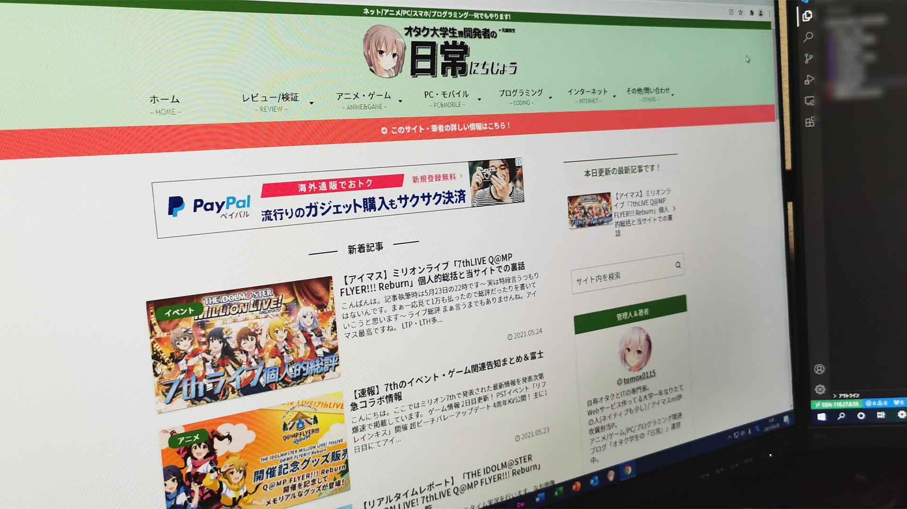

"オタク×IT＝最強"
この等式は私の事業運営のポリシーです.
オタク系コンテンツとIT技術のコラボレーションには無限の可能性を秘めていると確信しており,世の中のちょっと役に立つような面白いコンテンツを創造し提供していきます.
事業/サービス一覧

Webサービス開発事業
「オタク×IT」をテーマに生活がちょっと便利に、面白くなるようなWebサービスの開発を行っています！

ブログメディア運営事業
アニメ/ゲーム/ガジェット/IT/プログラミングなど様々なジャンルの記事を執筆し、「オタクのオタクによるオタクのためのブログメディア」を目指して運営しています！
その他提供中のサービス
 Twitter @SYM_HIKA_SEI
Twitter @SYM_HIKA_SEI
ヒカキンシンメトリーBot Make AnimeFace
Make AnimeFace
全自動AIキャラ生成サービス- ついキャプ(開発中)
Twiterの投稿キャプチャ生成 - その他いろいろ開発中…
詳細プロフィール
| HN | tomox0115 |
| 年齢 | 18歳・男 |
| 在籍 | 明治大学総合数理学部先端メディアサイエンス学科(IMS/FMS) |
| 肩書(?) | 大学生(個人事業主) メディアコンテンツクリエイター(格好つけてみた) Web開発事業運営者 ブログメディアライター 動画投稿者 二次元オタク・アイマスP 情報処理学会会員 元Mac信者のWindows信者 元バンドリーマー・ラブライバー |
| 趣味 | オタク系全般（アニメ視聴・ソシャゲ…） 自作PCを含むガジェット 鉄道(ほんのちょっと) |
| 専門分野 | ・PHP/JS/HTMLを用いたWebサービスの開発運用 ・Python/C#等を使ったネイティブ開発を少し ・自称オタクとIT・の専門家 ・ネット文化・オタク文化全般に関するそこそこの知見あり ・Webマーケティングやアナリティクスに関する基本知識あり |
| 推しキャラ | 伊吹翼(担当・アイドルマスターミリオンライブ!) 箱崎星梨花・真壁瑞希・望月杏奈(非担当・同上) 小宮果穂(非担当・アイドルマスターシャイニーカラーズ) 櫟井唯(ゆゆ式)/船見結衣(ゆるゆり) Poppin'Party 戸山香澄(BanGDream!) 中須かすみ(虹ヶ咲学園スクールアイドル同好会) Seikin(実在) |
| 持病 | 先天性眼球振盪による弱視・斜視・乱視 |
SNS&MEDIA
 Twitter
Twitter
@tomox0115 ブログメディア「オタク総研 with IT」
ブログメディア「オタク総研 with IT」
https://0115765.com GitHub
GitHub
@tomox0115 Qiita(技術情報共有サービス)
Qiita(技術情報共有サービス)
@tomox0115 DEV Community
DEV Community
@tomox0115 Imas MillionLive TH
Imas MillionLive TH
ID: CFAWBNCP- And so on...
略歴・沿革
大したことないが若干の略歴を…
| 2012～13年 | 地元の小学校に通う。 絶賛ヒカキンチルドレン。水泳と塾をやってた。 |
| 2015年4月 | 某全寮制の中高一貫校入学。6年間山奥の寮に住み始める。 |
| 2016年8月 | Visual C#でのデスクトップ開発 この頃からYouTubeとニコ動にゴミ動画を編集・投稿し始める。 |
| 2019年～2019年 | 中高在学中に幾度もブログ運営に失敗 FC2ブログ・ブロマガ・WPでのキュレーションサイトを運営しようとするも挫折 |
| 2019年 | 某高校広報委員長で校内イベント頒布資料の制作・デザインの統括 |
| 2020年5月～12月 | コロナ禍のせいで長い間領内幽閉されている最中、寮で真夜中にこっそりトイレでPHP/JSでのアプリケーション開発 →秋に現在籍の大学でプレゼン研究発表する |
| 2021年1月15日 | ブログメディア「オタク学生の日常」運営開始 |
| 2021年3月 | 寮から出所&高校卒業。佐賀県→東京都区内へ。 |
| 2021年4月 | 現在の在籍先に入学 |